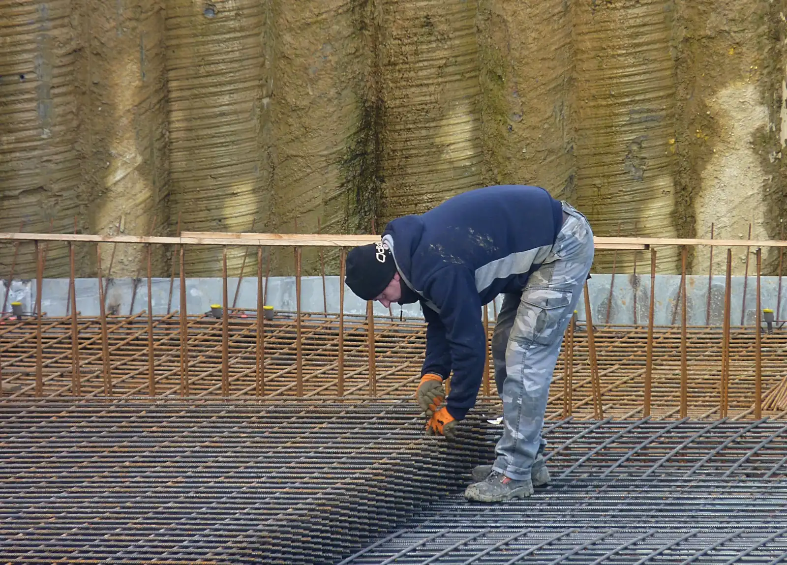

Основание и плёнка
Проверяем и готовим основание под заливку, укладываем плёнку под бетон.

Армирование
Раскладываем арматурную сетку по карте заливки.

Подача бетона
Миксер подаёт бетон внутрь здания.

Растяжка
Распределяем бетон по карте граблями.

Вибрация
Уплотняем бетон виброрейкой.

Выравнивание
Выводим плоскость рейкой по пролёту.

Затирка
Обрабатываем поверхность затирочной машиной.

Топпинг или полимер
Топпинг распределяем по свежему бетону и втираем машиной. Полимер наносим на готовое основание.

Готовый пол
Сдаём ровный пол под нагрузку склада или цеха.
01/ 09